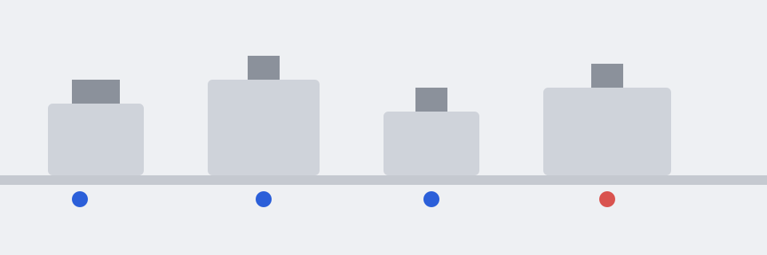

정지가 일어나기 평균 4.2일 전에 알려드립니다
12개 공장에 도입한 뒤 6개월간의 평균입니다. 점검을 계획 안에 넣을 수 있는 시간이 생깁니다.
- 비계획 정지 시간 38% 감소도입 6개월 후 평균, 12개 공장 기준
- 이상 징후를 평균 4.2일 먼저 탐지설비별 정상 패턴과 비교한 결과
- 도입 기간 평균 3주기존 설비 로그를 읽기 전용으로 연결
알리는 데서 끝나지 않고, 언제 무엇을 볼지까지 제안합니다
이상 징후 조기 탐지
설비별 정상 패턴을 학습해, 평소와 다른 로그가 나타나면 즉시 알립니다.
점검 시점 추천
고장 위험도와 생산 일정을 함께 고려해 가장 영향이 적은 점검 시간을 제안합니다.
원인 후보 제시
과거 고장 이력과 비교해 가능성이 높은 원인을 우선순위로 보여줍니다.
기존 설비를 바꾸지 않고, 4단계로 시작합니다
평균 3주면 운영 단계에 들어갑니다.
연결
기존 설비 로그와 PLC 데이터를 읽기 전용으로 연결합니다.
학습
최근 6개월 데이터로 설비별 정상 패턴을 학습합니다.
검증
2주간 예측 결과를 현장 담당자와 함께 확인합니다.
운영
이상 징후가 감지되면 담당자에게 알림과 점검 권고를 보냅니다.

우리 공장에 맞는 도입 방식 상담하기“점검 일정을 감으로 잡던 것에서 데이터로 근거를 대고 잡는 것으로 바뀌었습니다.”
우리 설비 데이터로 먼저 확인해 보세요
담당자가 영업일 1일 이내에 연락해 데모 일정을 맞춥니다.
- 현재 쓰는 로그와 PLC 환경을 함께 확인합니다.
- 도입 범위와 예상 기간을 안내합니다.
신청이 접수되었습니다
입력하신 이메일로 담당자가 연락드립니다.